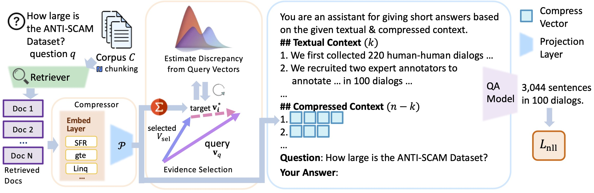

Overall Framework
SARA addresses key challenges in RAG through a hybrid compression strategy that balances local precision and global knowledge coverage. The framework operates through a two-stage training procedure:
Stage 1: Compression Learning
- Embedding Alignment: A lightweight compressor (sentence embedding model + MLP) is trained via an autoencoding task to align sentence embeddings with the LLM's token space
- Context Reconstruction: The model learns to reconstruct original contexts from compression vectors, preserving semantic fidelity while dramatically reducing token usage
- Curriculum Learning: Training stability is improved through progressive learning on increasingly complex text chunks
Stage 2: Instruction-tuning and Inference
- Hybrid Processing: Top-k passages are retained in natural language format while remaining contexts are compressed into vectors
- Dynamic Evidence Reranking: An iterative selection mechanism leverages compression vectors to optimize context relevance and diversity
- Dual Selection Strategies: Embedding-based novelty and Conditional Self-information (CSI) for evidence selection
The framework represents contexts at two complementary levels: 1) fine-grained natural-language spans that preserve critical entities and numerical values, and 2) compact, interpretable vectors that summarize high-level semantics. An iterative evidence-selection module employs compression vectors for dynamic reranking of contexts, ensuring optimal information density within strict context budgets.
